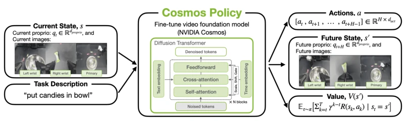
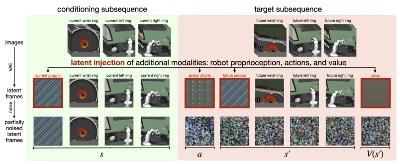
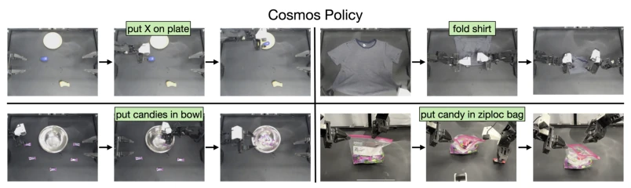
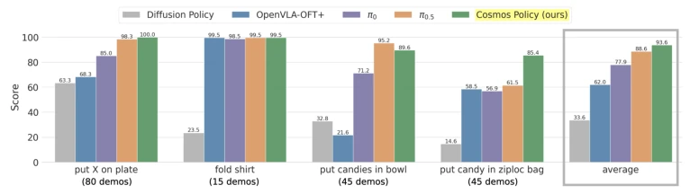
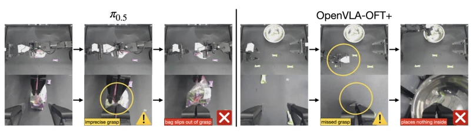
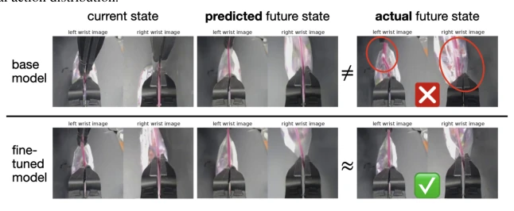
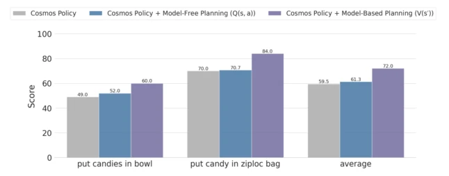
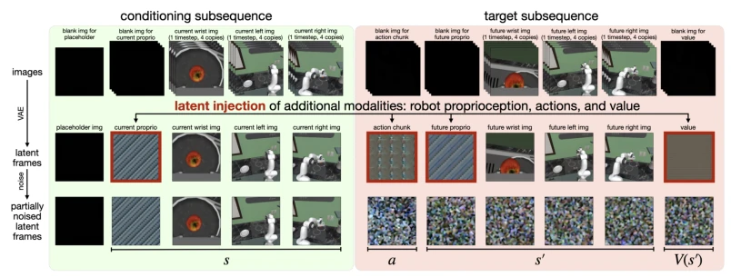
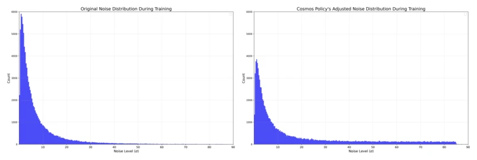
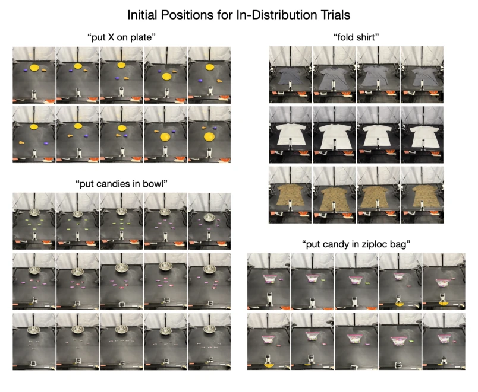

This paper attempts to solve the most complex problem with the simplest method: directly converting video generation models into robot policies. Cosmos Policy does not employ fancy architectures, but instead embeds actions, future states, and value functions into the latent frames of the video diffusion model. The results are indeed stunning, achieving SOTA in both LIBERO and RoboCasa simulations, and outperforming VLA models in real-world ALOHA tasks. However, do not celebrate too early; inference speed during planning is a significant drawback, with one action chunk generated every 5 seconds, making it difficult for dynamic tasks to keep up. Overall, this is a powerful validation of the "control using video models" route, proving the value of pre-trained video priors, but the shortcoming in computational efficiency remains obvious, making it suitable for offline or slow tasks. Although this "ready-made" approach is efficient, it also exposes the latency bottleneck of video models in real-time control; if inference speed cannot be optimized in the future, it may remain limited to simulation or slow operation scenarios, still struggling with high-speed dynamic environments.
研究动机Motivation
现有工作要么把视频模型和动作模块分开训练，引入额外复杂度（如 Liang et al., 2025; Li et al., 2025a），要么为了统一架构放弃预训练视频模型（如 Zhu et al., 2025）。VLA 模型虽然流行，但基于静态图文对，缺乏时空因果和物理先验（Brohan et al., 2023; Kim et al., 2024）。Cosmos Policy 旨在利用视频模型的时空先验，通过单阶段微调直接生成动作，同时解决规划问题。
Existing work either trains video models and action modules separately, introducing additional complexity (e.g., Liang et al., 2025; Li et al., 2025a), or abandons pre-trained video models to unify the architecture (e.g., Zhu et al., 2025). Although VLA models are popular, they are based on static text-image pairs and lack spatiotemporal causality and physical priors (Brohan et al., 2023; Kim et al., 2024). Cosmos Policy aims to leverage the spatiotemporal priors of video models, directly generating actions through single-stage fine-tuning while solving planning problems.
The core is "Latent Frame Injection". Without modifying the Cosmos-Predict2 architecture, robot proprioception, action chunks, future state images, and value functions are encoded as latent frames and inserted into the video diffusion sequence. During training, 50% of the data trains the policy (predicting actions + future states + value), and 50% of the data trains the world model and value function. During the planning phase, rollout data is collected to fine-tune the world model and value function, using Best-of-N sampling: generating multiple action candidates, predicting future states and values with the planning model, and executing the one with the highest value. This achieves the unification of policy, world model, and value function.

Figure 1: We present Cosmos Policy, a state-of-the-art robot policy fine-tuned from the NVIDIA Cosmos- Predict2-2B video foundation model. Cosmos Policy handles multimodal inputs and multi-view camera images and predicts (1) a robot action chunk, (2) future state (represented by robot proprioception and image observa- tions), and (3) value (expected rewards-to-go at the future state). No architectural changes are made to the base video model, and all modalities are jointly modeled through the video diffusion learning objective.

Figure 2: The latent diffusion sequence of Cosmos Policy. We illustrate latent frame injection—the primary mechanism for adapting the pretrained Cosmos-Predict2 into a policy that can predict robot actions, future states, and values without architectural changes. First, raw images are tokenized into latent frames (first row). Then, additional modalities are inserted directly into the latent frame sequence of the video diffusion model (second row). The model is then tasked to denoise the noised latent frames conditioned on the clean frames (third row). See Section 4.1 for more details. (Note: For simplicity, this figure does not depict certain imple- mentation details; see Figure 8 for a more detailed visualization.)
On the LIBERO and RoboCasa simulation benchmarks, Cosmos Policy achieved success rates of 98.5% and 67.1% respectively, outperforming Diffusion Policy, UVA, and VLA models (e.g., π0.5). In real-world ALOHA tasks, it achieved the highest average score. Ablation studies show that auxiliary learning objectives (predicting future states and value) and pre-trained priors are crucial for performance. After introducing model-based planning, the average score improved by 12.5% on difficult tasks. However, planning inference speed is slow.

Figure 3: Cosmos Policy in the ALOHA robot tasks. Cosmos Policy can successfully execute real-world robotic control tasks that require long-horizon, high-precision manipulation and have high action multimodality.

Figure 4: Real-world ALOHA robot evaluation results. We evaluate state-of-the-art policies on a suite of four tasks and measure the score, which represents average percent completion of each task. Cosmos Policy achieves highest overall score, outperforming all other methods in three of four tasks.

Figure 5: Common failure modes of π0.5 and OpenVLA-OFT+ on two challenging ALOHA robot tasks. Left: π0.5 struggles to execute a high-precision grasp and loses grip of the ziploc bag. Right: OpenVLA- OFT+ reaches between two candies rather than towards one, suggesting difficulty with modeling the highly multimodal action distribution.

Figure 6: World model predictions: base Cosmos Policy vs. fine-tuned checkpoint. Top: The base Cosmos Policy’s world model may fail to predict errors such as losing grasp of the ziploc bag slider, as it is only trained on demonstrations. Bottom: After fine-tuning on policy rollout data, the world model more accurately predicts the resulting state, enabling more effective planning and eventual episode success.

Figure 7: Model-based planning results. We evaluate the base Cosmos Policy on challenging initial states for the last two ALOHA robot tasks, and compare it with two planning variants (model-based and model-free). We find that the model-based variant (V (s′)) leads to highest overall performance.
其他图片Other Figures

Figure 8: Detailed view of the latent diffusion sequence of Cosmos Policy. This is a more detailed version of Figure 2 which shows implementation details. As illustrated in the top row, blank (all zero) images are inserted into the input image sequence, and these images are encoded into latent frames by the VAE tokenizer. Then, in the middle row, these placeholder latent frames are completely overwritten by latent injection of new modalities (robot proprioception, actions, and value). Note that a placeholder image is set apart at the beginning of the sequence due to the video model’s tokenization scheme, which encodes the first image by itself while the rest of the images are temporally compressed in groups of four (as discussed in Section 3). Therefore, to ensure that current timestep obs

Figure 9: Base model noise distribution vs. Cosmos Policy’s adjusted noise distribution. We change the base Cosmos-Predict2 video model’s log-normal noise distribution (left) into a hybrid log-normal-uniform dis- tribution (right) with more weight on higher noise levels. This modification empirically leads to more accurate generations at test time. See a detailed explanation in Appendix A.2.1.

Figure 10: In-distribution initial conditions for ALOHA robot evaluations. Here we show sample initial positions used for evaluating policies in conditions similar to the training demonstrations.